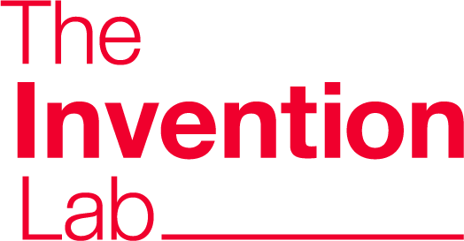

MRO·산업용품
산업 현장에서 반복 구매·사용되는 유지보수용품, 소모품, 안전용품 및 작업용품
MRO·소비재·렌탈·중고 분야의 초기기업을 발굴해 투자 검토부터 판로 개척, 공동사업화, LIPS 프로그램 추천까지 연결합니다.
산업 현장에는 작업자의 안전과 편의, 장비 운영과 유지보수, 구매와 유통을 개선할 수 있는 혁신 수요가 존재합니다.
본 프로그램은 산업계에서 활용 가능한 초기기업을 발굴하여 단순 육성에 그치지 않고, 투자 검토·현장 검증·판로 개척·공동사업화로 이어지는 성장 경로를 제공합니다.
산업계 적용 가능성과 고객가치가 명확한 초기기업이라면 지원할 수 있습니다. 아래 분야 외에도 중장비선수들과 공동사업화 가능성이 있는 기업을 폭넓게 검토합니다.
산업 현장에서 반복 구매·사용되는 유지보수용품, 소모품, 안전용품 및 작업용품
산업 종사자의 안전, 건강, 편의 및 업무환경을 개선하는 제품과 서비스
산업 장비와 제품의 이용 효율을 높이는 렌탈, 구독 및 자산관리 서비스
중고 장비와 제품의 거래, 검사, 정비, 재유통 및 재제조 관련 서비스
구매·유통·정비·물류·안전·운영 효율을 개선하는 기술 및 B2B 솔루션
기업의 제품 특성과 성장단계를 검토하여 산업현장 판로·공동사업화와 투자·LIPS 연계를 추진합니다. 두 트랙은 상호 배타적이지 않으며, 적합성에 따라 병행할 수 있습니다.
중장비선수들이 보유한 산업현장 고객 네트워크를 기반으로 선정기업의 제품과 서비스를 직접 시장에 연결합니다.
구체적인 영업 범위, 판매방식 및 수익배분 조건은 현장 적합성 검토 후 별도 사업협약을 통해 확정합니다.
성장 가능성과 산업현장 적용성을 갖춘 기업에 투자하고, LIPS 프로그램을 통한 후속 성장재원 확보를 지원합니다.
최소 2개사는 프로그램 운영목표입니다. 투자와 LIPS 추천은 투자심의 및 관련 자격요건 충족 여부에 따라 최종 결정됩니다.
사업모델 고도화 · IR 및 투자전략 · 국내외 파트너 연계 · 해외진출 지원
사진전과 브랜드 필름은 장비보다 사람을 먼저 바라보는 중장비선수들의 관점을 담고 있습니다. 본 프로그램도 현장에서 일하는 사람들의 실제 필요에서 출발합니다.
좌우 버튼 또는 영상 제목을 누르면 세 편의 브랜드 필름이 한 화면에서 전환됩니다.
사업성, 산업현장 적용성, 팀 역량 및 협업 가능성을 단계별로 검토합니다. 투자와 LIPS 추천은 별도의 심사 및 자격요건 검토를 거쳐 결정됩니다.
지원서와 IR 자료를 기반으로 프로그램 참여기업을 모집합니다.
APPLICATION사업성, 산업현장 적용성, 고객가치 및 협업 가능성을 검토합니다.
SCREENING기업 발표와 질의응답을 통해 사업·투자 적합성을 평가합니다.
PITCH제품, 기술, 고객, 공급 역량과 주요 증빙자료를 확인합니다.
DUE DILIGENCE투자심의위원회 의결 및 계약 체결 후 투자를 집행합니다.
INVESTMENT투자기업 중 자격요건을 충족한 기업을 대상으로 추천을 검토합니다.
SCALE-UP중장비선수들은 현장과 고객 접점을, 더인벤션랩은 기업 발굴과 투자·육성 체계를 담당합니다. 두 기관의 역할을 분명히 나누고, 실제 협업과 투자 가능성을 단계적으로 검토합니다.
중장비선수들은 중고지게차 판매·렌탈과 물류장비 컨설팅을 기반으로 산업 현장의 고객과 장비 정보를 축적해 온 기업입니다. 중장비114, 커뮤니티, 다큐멘터리와 사진전 등 현장 종사자를 위한 서비스와 콘텐츠도 운영하고 있습니다.
이번 프로그램에서는 산업 현장의 수요와 고객 접점을 바탕으로 제품 검증, 판로 개척 및 공동사업화 가능성을 함께 검토합니다.

INVESTMENT & ACCELERATION더인벤션랩은 2017년부터 대기업·중견기업의 오픈이노베이션, 초기 투자와 액셀러레이팅, 사내벤처 및 스핀오프 프로젝트를 수행해 온 초기 투자·벤처스튜디오 기관입니다. TIPS·서울형 TIPS·LIPS 연계형 투자와 성장 지원 체계를 운영하고 있습니다.
이번 프로그램에서는 참여기업 발굴과 평가, 초기 투자 검토 및 펀드 운용을 담당하며, 투자 이후 정책자금 연계와 후속 성장 경로를 지원합니다.
산업 현장에서 실제로 사용될 수 있는 제품과 서비스를 보유한 초기기업의 지원을 기다립니다.